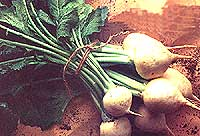

It's worth putting in a turnip patch just to enjoy a "potlikker" dish.
THE TURNIP HAS, WITH GOOD REASON, been a staple of the human diet for millenniums. Evidence found near Beijing, China, indicates prehistoric cave dwellers wrapped turnip ice; in ferns or wild onions and steamed them in wet leaves placed on t stones in the fire. Cave paint created several thousand years later heap Aurignac, France, show turnips being boiled in clay pots.
Our Cro-Magnon ancestors apparently foraged these plants from the wild, but by 3500 B.C.., Sumerians in the valley of the Euphrates were cultivating the vegetable. In later, centuries; Greeks and Romans turned turnip cooking into a culinary art form, and forums were held to discuss the best ways to -prepare the vegetable. Some epicures liked diem pickled; others preserved the roots in myrtle berries, honey and vinegar. One Roman method involved steaming turnips successively with cumin, rue and benzoin (a fragrant, balsamic resin). After being cooked for several hours, the vegetable was then mashed and simmered in honey, vinegar, gravy, boiled grapes and a little oil. Ancients might have considered this complicated dish delicious, but I see no reason to disguise the deliciously pungent taste of turnips. In fact, a favorite Saturday night supper of my south Georgia childhood consisted of cornbread crumbled into "potlikker"-in this case, the leftover liquid from cooking turnip greens. To me, it's worth putting in a turnip patch just to enjoy this down-home dish whenever I like, though turnips (Brassica rapa) and rutabagas (Brassica napobrassica) reward a grower in other ways.
First of all, they're very nutritious. A serving of turnip tops steamed in a little water, while containing only 20 calories, gives you 184 milligrams of calcium and 6,300 units of vitamin A, along with significant amounts of phosphorus, iron, thiamin, riboflavin and niacin, as well as 69 milligrams of vitamin C. (The only vegetable containing more vitamin C is parsley.) Rutabaga greens, at 35 calories a serving, offer a little less of most of these nutrients, but add 167 milligrams of potassium. Eaten raw-and the tender leaves of both these vegetables are a tasty addition to salads-they are even better for you. The roots, while not quite as nutritious, still have the same vitamin content as potatoes and are richer in vitamin C.
Best of all, turnips and rutabagas are easy to grow and store and are relatively pest-free. Much of the crop's success depends on timing.
What and How to Grow
Like those other brassicas, cabbages and Brussels sprouts, turnips and rutabagas are cool-weather crops. The rutabaga is actually a horticultural cross between a turnip and a cabbage; it was created by Swiss botanist Gaspard Bauhin in the seventeenth century, though it didn't arrive in this country until 1806. Rutabagas are commonly called fall or Swedish turnips or simply Swedes. (Because of their liking for cool, glacial soil, they're widely grown and eaten in Sweden and other northern countries.) Additionally, rutabagas can tolerate frost better than turnips, and the roots can be stored for up to a year.
Whether you're growing turnips or rutabagas, these underground brassicas should be planted about three weeks before the last frost date in early spring or, for a (usually better) fall crop, in midsummer. They also are a winter crop in the warmer sections of the South.
If you want to keep these root crops growing quickly, water is the secret.
The main thing to keep in mind is that these vegetables require temperatures of between 50° and 70°F to mature, so select a variety with growing needs that correspond to your local climate. (The soil must be at least 40°F for seed germination, which generally takes from seven to 14 days.) Hot weather will turn the leaves rank and make the roots woody and bitter.
The most popular turnip is the fine-tasting, fine-storing Purple Top White Globe, which matures in 55 to 58 days and is best for a fall crop. The Japanese, however, have come up with several varieties that mature much faster. For example, the hybrid Just Right (40 days) is remarkable for its tender greens and roots, while the two-inch root of virus resistant Tokyo Cross is ready to eat in only 35 days. Shogoin (30 days), another Japanese offering, is cultivated primarily for its thick, delicious foliage, and if you can nurture your crop for 70 days, its roots are tasty, too. Some turnips, such as Seven Top, are grown only for their greens. Turnip roots can be white or yellow, and, though turnips are classified according to the shape of their roots-flat, round or cylindrical-shape doesn't make a great deal of difference in their taste. Their tops come in shades of green, red, purple and gold. Certain white varieties with green tops have proved to be the hardiest.
Rutabagas generally take 90 days to mature. Macomber (80 days) and American Purple Top (88 to 90 days) are old favorites.
Turnips and rutabagas are fairly tough crops that can be grown in almost any type of soil, but they thrive best in loose, organically rich, stone-free, water-retentive but well-drained earth that's been worked deeply. The pH should be between 6.5 and 7.0. Phosphorus (try ground rock phosphate and granite dust) encourages root development. Too much nitrogen will produce thick leaves but puny roots, so don't fertilize with unrotted manure.
Because turnips and Swedes are such light feeders, they can be rotated with heavy feeders like corn or squash. But don't plant your crop near mustard greens, which will inhibit its growth, or near other brassica cousins such as broccoli or cabbage, since all family members are susceptible to the same diseases. Turnips and rutabagas can, however, tolerate partial shade, so some people like to grow them between climbing peas. Any type of pea is a good companion plant to these crops.
Neither of these root crops transplants well, so sow your seeds where you intend to grow them. (One seed packet will plant a 50foot row and will produce 25 pounds of leaves and 50 pounds of roots; the germination rate is over 70%, and the seed will store from two to five years and can be sprouted.) Sow your spring crop 1/4 inch deep; plant fall crops 1/2 inch deep two months (three months for rutabagas) before the first expected frost. Seeds may be broadcast and later thinned to three or four inches apart, or they can be planted in rows 18 or more inches apart. Give rutabaga plants six inches in which to grow. (Use the tender thinnings in salads.)
Keep down weeds and aerate the soil with hoeing and hand-cultivating, and never, at any stage, allow the bed to dry out. You want to keep these vegetables growing fast and continuously, and water is the secret. Constant moisture will produce a good, well-flavored, tender crop, while lack of moisture will make the roots fibrous and strong-tasting and will force the plant to send up a seed stalk. When the leaves are about five inches long, you can mulch the plants to keep weeds down and moisture in.
What to Watch For
You'd expect turnips to be susceptible to all the pests and diseases that attack other brassicas. Theoretically, they are, but scientists have found that the turnip plant has an insecticidal chemical compound in its system that helps ward of such insects as aphids, spider mites, houseflies and beetles. Therefore, root maggots are the most likely cause of problems. They can be discouraged by scattering wood ashes liberally around your plants. Should aphids or flea beetles attack, use hard hose sprays, sticky traps, garlic sprays, diatomaceous earth, wood ashes or ladybugs (for aphids) to get rid of them.
The main disease to watch for is black rot, which turns leaves black and foul-smelling. The only way to prevent this bacterial menace is with strict crop rotation. Specifically, don't put your turnip or rutabaga patch where it or any other cole crop has grown within the last five years, and immediately remove and destroy any diseased plants to keep this plague from spreading.
How to Harvest and Store
Greens can be harvested as soon as they're large enough to pick, but don't pluck any one plant too heavily or you'll kill the root. Turnips should be pulled when the roots are from one to three inches in diameter. (Usually, the smaller they are, the tenderer they'll be. Very young ones make a fine substitute for radishes and can be carved into decorative garnishes.) To harvest the roots, use a spading fork to loosen the soil around the base of the leaves, grab the tops, and pull gently.
Rutabaga roots are much larger-and sweeter-than turnips, but they should not be allowed to grow so big that they become woody, otherwise they're more fit for cattle than human consumption. However, because of their hardiness, many people leave rutabagas in the ground during the winter, rather than storing them, to be dug as needed.
Turnips are not as long-lasting as rutabagas, but in mild-winter areas, they can be mulched and left in the garden for an extended harvest. With both crops, though, it's often better to pull up the roots, twist of the tops (but not too closely; leave about '/z inch of stems) and store them in layers in boxes of moist sand, sawdust or peat, or in heaps or ridges covered with a layer of soil and straw. Some people cover the roots in wax to prevent dehydration and store them in an area just above freezing. Others simply place them in any cool (32° to 40°F), damp, dark place such as a basement or root cellar. Just make sure you don't store any that are bruised, cut or diseased.
If an early hot spell hits your spring crop, taste-test the roots daily and harvest the entire crop at the first sign of deterioration. Refrigerated, the greens will keep for up to a week or can be frozen for future use. Store the roots as mentioned above in a cool, moist place.
Freezing, which preserves the most nutrition, is the best way to store turnip and rutabaga tops. Wash young, tender green leaves in several changes of water, removing tough stems or bruised leaves. Blanch each pound in two gallons of boiling water for two minutes, stirring to keep the greens from sticking together. Cool, drain well, and pack into containers, leaving '/a inch of head space. Seal, label, and freeze. When ready for use, cook for eight to 15 minutes.
The roots, while they don't can well, can also be frozen. I find it easier just to store them in my cellar, but I do like to add a diced root or two for flavor and texture in each package of frozen greens.
Old-Fashioned Turnip Greens
1 onion, chopped 3 strips bacon, cut into 2" pieces 1 small clove garlic, minced 1/2 teaspoon salt 1/4 teaspoon pepper Dash of vinegar 3 cups tightly packed chopped turnip greens 1 or 2 eggs, hard-boiled
Fill a large saucepan half-full of water and add onion, bacon, garlic, salt, pepper and vinegar. Bring to a boil for 1 minute. Add turnip greens.and cook until tender. Drain (save the liquid), and top with sliced-egg garnish. Serves 4 to 6. (For your next meal, reheat the cooking liquid-called pot liquor in the South-pour into individual bowls, add small chunks of cornbread, and enjoy!)
Rutabaga Casserole
3 pounds rutabagas, peeled and diced 2 teaspoons brown sugar (divided) 1/2 teaspoon dill seed 1 teaspoon salt 2 tablespoons margarine or butter 1/3 cup sour cream Place rutabagas, 1 teaspoon sugar, dill seed and salt in about 1" of boiling water, and simmer, covered, for 10 minutes. Drain, mash, and stir in remaining sugar, salt, margarine and sour cream. Turn into a 11/2 -quart oiled casserole dish, cover, and bake in 350° oven for 30 minutes or until tender. Uncover and place under broiler to brown. Serves 6.
Much of this cool- weather crop's success depends on timing.
SUSAN SAYS
HERE ARE SOME SUGGESTIONS from MOTHER'S garden er, Susan Sides: It's not really all that hard to locate the turnip listings in any seed catalog. Let the book fall open to the lavish tomato section, turn the page, and there they'll be-all two or three varieties.
Now, the flea beetle and cabbage maggot populations think, of course, that we've gotten our priorities all wrong. These discerning diners will take a turnip over a "love apple" any day. And if you're cultivating your own crop of Purple Tops in the spring (when the little pests are most active), they'll think you're so very kind to go through all that trouble just for them.
To avoid the worst of the damage, you could plant only in autumn. (Another plus for fall planting is that the vegetables are not nearly as likely to develop a bitter, woody taste as a result of maturing in warm weather.) But some of us become addicted to those spring greens and potlikker, and- lucky for us-there's more than one way to skin a flea beetle.
One solution is to try sowing seeds three or four weeks before the first fall frost date. Mulch the half-grown plants just before frost does arrive to hold them over the winter for an advanced spring start. (An additional layer or two of spunbond row cover helps in the coldest regions.) Another angle is to plant seeds as soon as the ground can be worked in late winter. (Prepare this area ahead of time in the fall.) Cover with a cloche or cold frame until the nights slip above freezing. A third method for dedicated turnip fans is to start seeds indoors in individual pots eight weeks before the last spring frost date. Transplant to the garden after plants have four or five weeks of growth under their belts.
All three of these suggestions will help you mature an extra-early crop. Then, while sleeping insects only dream of turnips yet to come, you'll be harvesting them by the armload.
|
 |
|
|